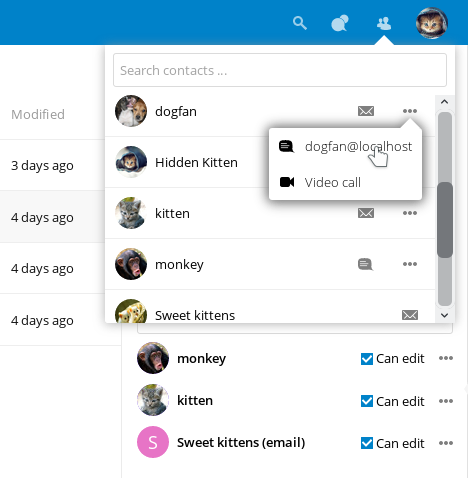

What’s new for users in Nextcloud latest
Easier way to select a new app:

New Contacts menu to reach your colleagues or friends easier:

A contact popup menu over avatars everywhere:

Ability to send multiple unique sharing links each with their own settings, by entering email addresses (the recipient will receive an email):

Many other improvements and new apps, like screensharing in Video calls, new Circles app for user defined groups, push notifications, notifications of file changes even when shared to another server, undo removal of files from a shared folder even if the removal was done by a recipient, directly sharing to social media and much more.